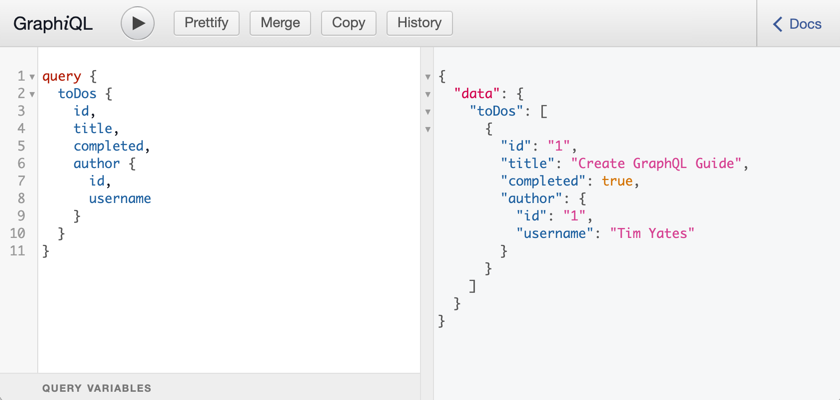

Creating a ToDo application with Micronaut GraphQL
Build a TODO application with Micronaut GraphQL.
On this guide
In this section
Getting Started
In this guide, you will create a Micronaut application written in Java that uses GraphQL to create a todo application.
GraphQL is a query language for APIs and a runtime for fulfilling those queries with your existing data. GraphQL provides a complete and understandable description of the data in your API, gives clients the power to ask for exactly what they need and nothing more, makes it easier to evolve APIs over time, and enables powerful developer tools.
You will be using:
-
A PostgreSQL instance provided by Test Resources and running in Docker.
-
Micronaut Data to persist our ToDos to this database.
-
Flyway to handle our database migrations.
-
Micronaut GraphQL to expose our data.
-
Testcontainers to run a PostgreSQL instance for local dev, and tests.
The application will expose a GraphQL endpoint at /graphql for the data to be consumed and modified.
What you will need
To complete this guide, you will need the following:
-
Some time on your hands
-
A decent text editor or IDE (e.g. IntelliJ IDEA)
-
JDK 21 or greater installed with
JAVA_HOMEconfigured appropriately
Solution
We recommend that you follow the instructions in the next sections and create the application step by step. However, you can go right to the completed example.
-
Download and unzip the source
Writing the Application
Create an application using the Micronaut Command Line Interface or with Micronaut Launch.
mn create-app example.micronaut.micronautguide \
--features=graphql,data-jdbc,flyway,postgres,validation,graalvm \
--build=gradle \
--lang=java \
--test=junit
If you don’t specify the --build argument, Gradle with the Kotlin DSL is used as the build tool. If you don’t specify the --lang argument, Java is used as the language.If you don’t specify the --test argument, JUnit is used for Java and Kotlin, and Spock is used for Groovy.
|
The previous command creates a Micronaut application with the default package example.micronaut in a directory named micronautguide.
If you use Micronaut Launch, select Micronaut Application as application type and add graphql, data-jdbc, flyway, postgres, validation, and graalvm features.
| If you have an existing Micronaut application and want to add the functionality described here, you can view the dependency and configuration changes from the specified features, and apply those changes to your application. |
Persistence layer
Database Migration with Flyway
We need a way to create the database schema. For that, we use Micronaut integration with Flyway.
Flyway automates schema changes, significantly simplifying schema management tasks, such as migrating, rolling back, and reproducing in multiple environments.
Add the following snippet to include the necessary dependencies:
implementation("io.micronaut.flyway:micronaut-flyway")We will enable Flyway in the Micronaut configuration file and configure it to perform migrations on one of the defined data sources.
| Configuring multiple data sources is as simple as enabling Flyway for each one. You can also specify directories that will be used for migrating each data source. Review the Micronaut Flyway documentation for additional details. |
Flyway migration will be automatically triggered before your Micronaut application starts. Flyway will read migration commands in the resources/db/migration/ directory, execute them if necessary, and verify that the configured data source is consistent with them.
Create the following migration files with the database schema creation:
Entities
Create an Entity class to represent an Author:
package example.micronaut;
import io.micronaut.data.annotation.GeneratedValue;
import io.micronaut.data.annotation.Id;
import io.micronaut.data.annotation.MappedEntity;
import jakarta.validation.constraints.NotNull;
import static io.micronaut.data.annotation.GeneratedValue.Type.AUTO;
@MappedEntity //
public class Author {
@Id //
@GeneratedValue(AUTO)
private Long id;
@NotNull
private final String username;
public Author(@NotNull String username) {
this.username = username;
}
public Long getId() {
return id;
}
public void setId(Long id) {
this.id = id;
}
public String getUsername() {
return username;
}
}| 1 | Annotate the class with @MappedEntity to map the class to the table defined in the schema. |
| 1 | Specifies the ID of an entity |
And another to represent a ToDo:
package example.micronaut;
import io.micronaut.data.annotation.GeneratedValue;
import io.micronaut.data.annotation.Id;
import io.micronaut.data.annotation.MappedEntity;
import jakarta.validation.constraints.NotNull;
import static io.micronaut.data.annotation.GeneratedValue.Type.AUTO;
@MappedEntity //
public class ToDo {
@Id //
@GeneratedValue(AUTO)
private Long id;
@NotNull
private String title;
private boolean completed;
private final long authorId;
public ToDo(String title, long authorId) {
this.title = title;
this.authorId = authorId;
}
public Long getId() {
return id;
}
public void setId(Long id) {
this.id = id;
}
public String getTitle() {
return title;
}
public void setTitle(String title) {
this.title = title;
}
public boolean isCompleted() {
return completed;
}
public void setCompleted(boolean completed) {
this.completed = completed;
}
public long getAuthorId() {
return authorId;
}
}| 1 | Annotate the class with @MappedEntity to map the class to the table defined in the schema. |
| 1 | Specifies the ID of an entity |
Repositories
Create a JdbcRepository for each of our Entity classes.
The simplest of these is the ToDoRepository which just requires the default methods:
package example.micronaut;
import io.micronaut.data.jdbc.annotation.JdbcRepository;
import io.micronaut.data.model.query.builder.sql.Dialect;
import io.micronaut.data.repository.PageableRepository;
import static io.micronaut.data.model.query.builder.sql.Dialect.POSTGRES;
@JdbcRepository(dialect = POSTGRES) //
public interface ToDoRepository extends PageableRepository<ToDo, Long> { //
}| 1 | @JdbcRepository with a specific dialect. |
| 1 | By extending CrudRepository you enable automatic generation of CRUD (Create, Read, Update, Delete) operations. |
Then create a repository for the authors. This requires extra finders to simplify the GraphQL wiring in the next step:
package example.micronaut;
import io.micronaut.data.jdbc.annotation.JdbcRepository;
import io.micronaut.data.repository.CrudRepository;
import java.util.Collection;
import java.util.Optional;
import static io.micronaut.data.model.query.builder.sql.Dialect.POSTGRES;
@JdbcRepository(dialect = POSTGRES) //
public interface AuthorRepository extends CrudRepository<Author, Long> { //
Optional<Author> findByUsername(String username); //
Collection<Author> findByIdIn(Collection<Long> ids); //
default Author findOrCreate(String username) { //
return findByUsername(username).orElseGet(() -> save(new Author(username)));
}
}| 1 | @JdbcRepository with a specific dialect. |
| 1 | By extending CrudRepository you enable automatic generation of CRUD (Create, Read, Update, Delete) operations. |
| 1 | When creating todos a method is required to search for an existing username. |
| 2 | When GraphQL loads a ToDo, it uses this to fetch the authors if they are required in the response. |
| 3 | Find an existing author, or else create a new one when creating a ToDo. |
GraphQL
The initial Micronaut application create-app step already added the GraphQL dependency:
implementation("io.micronaut.graphql:micronaut-graphql")So the default GraphQL endpoint /graphql is enabled, and extra configuration is not required.
Describe your schema
Create the file schema.graphqls:
Data Fetchers
For each query and mutator in the schema, create a DataFetcher which will bind the GraphQL schema to our domain model.
These will execute the appropriate queries in the datastore.
Queries
Create class ToDosDataFetcher to implement the toDos query:
package example.micronaut;
import graphql.schema.DataFetcher;
import graphql.schema.DataFetchingEnvironment;
import jakarta.inject.Singleton;
@Singleton //
public class ToDosDataFetcher implements DataFetcher<Iterable<ToDo>> {
private final ToDoRepository toDoRepository;
public ToDosDataFetcher(ToDoRepository toDoRepository) { //
this.toDoRepository = toDoRepository;
}
@Override
public Iterable<ToDo> get(DataFetchingEnvironment env) {
return toDoRepository.findAll();
}
}| 1 | Use jakarta.inject.Singleton to designate a class as a singleton. |
| 1 | Use constructor injection to inject a bean of type ToDoRepository. |
Mutations
Create CreateToDoDataFetcher for the creation of ToDos:
package example.micronaut;
import graphql.schema.DataFetcher;
import graphql.schema.DataFetchingEnvironment;
import jakarta.inject.Singleton;
import jakarta.transaction.Transactional;
@Singleton //
public class CreateToDoDataFetcher implements DataFetcher<ToDo> {
private final ToDoRepository toDoRepository;
private final AuthorRepository authorRepository;
public CreateToDoDataFetcher(ToDoRepository toDoRepository, //
AuthorRepository authorRepository) {
this.toDoRepository = toDoRepository;
this.authorRepository = authorRepository;
}
@Override
@Transactional
public ToDo get(DataFetchingEnvironment env) {
String title = env.getArgument("title");
String username = env.getArgument("author");
Author author = authorRepository.findOrCreate(username); //
ToDo toDo = new ToDo(title, author.getId());
return toDoRepository.save(toDo); //
}
}| 1 | Use jakarta.inject.Singleton to designate a class as a singleton. |
| 1 | Use constructor injection to inject a bean of type ToDoRepository. |
| 1 | Find the existing author or create a new one. |
| 2 | Persist the new ToDo. |
And CompleteToDoDataFetcher to mark ToDos as complete:
package example.micronaut;
import graphql.schema.DataFetcher;
import graphql.schema.DataFetchingEnvironment;
import jakarta.inject.Singleton;
@Singleton //
public class CompleteToDoDataFetcher implements DataFetcher<Boolean> {
private final ToDoRepository toDoRepository;
public CompleteToDoDataFetcher(ToDoRepository toDoRepository) { //
this.toDoRepository = toDoRepository;
}
@Override
public Boolean get(DataFetchingEnvironment env) {
long id = Long.parseLong(env.getArgument("id"));
return toDoRepository
.findById(id) //
.map(this::setCompletedAndUpdate)
.orElse(false);
}
private boolean setCompletedAndUpdate(ToDo todo) {
todo.setCompleted(true); //
toDoRepository.update(todo); //
return true;
}
}| 1 | Use jakarta.inject.Singleton to designate a class as a singleton. |
| 1 | Use constructor injection to inject a bean of type ToDoRepository. |
| 1 | Find the existing ToDo based on its id. |
| 2 | If found, set completed. |
| 3 | And update the version in the database. |
Wiring
GraphQL allows data to be fetched on demand. In this example, a user may request a list of ToDos, but not require the author to be populated. A method is required to optionally load Authors based on their ID.
To do this, register a DataLoader that finds authors based on a collection of ids:
package example.micronaut;
import io.micronaut.scheduling.TaskExecutors;
import jakarta.inject.Named;
import jakarta.inject.Singleton;
import org.dataloader.MappedBatchLoader;
import java.util.Map;
import java.util.Set;
import java.util.concurrent.CompletableFuture;
import java.util.concurrent.CompletionStage;
import java.util.concurrent.ExecutorService;
import java.util.function.Function;
import static java.util.stream.Collectors.toMap;
@Singleton //
public class AuthorDataLoader implements MappedBatchLoader<Long, Author> {
private final AuthorRepository authorRepository;
private final ExecutorService executor;
public AuthorDataLoader(
AuthorRepository authorRepository,
@Named(TaskExecutors.BLOCKING) ExecutorService executor //
) {
this.authorRepository = authorRepository;
this.executor = executor;
}
@Override
public CompletionStage<Map<Long, Author>> load(Set<Long> keys) {
return CompletableFuture.supplyAsync(() -> authorRepository
.findByIdIn(keys)
.stream()
.collect(toMap(Author::getId, Function.identity())),
executor
);
}
}| 1 | Use jakarta.inject.Singleton to designate a class as a singleton. |
| 1 | Inject the IO executor service. |
This is registered in the DataLoaderRegistry under the key author
package example.micronaut;
import io.micronaut.context.annotation.Factory;
import io.micronaut.runtime.http.scope.RequestScope;
import org.dataloader.DataLoaderFactory;
import org.dataloader.DataLoaderRegistry;
import org.slf4j.Logger;
import org.slf4j.LoggerFactory;
@Factory //
public class DataLoaderRegistryFactory {
private static final Logger LOG = LoggerFactory.getLogger(DataLoaderRegistryFactory.class);
@SuppressWarnings("unused")
@RequestScope //
public DataLoaderRegistry dataLoaderRegistry(AuthorDataLoader authorDataLoader) {
DataLoaderRegistry dataLoaderRegistry = new DataLoaderRegistry();
dataLoaderRegistry.register(
"author",
DataLoaderFactory.newMappedDataLoader(authorDataLoader)
); //
LOG.trace("Created new data loader registry");
return dataLoaderRegistry;
}
}| 1 | A class annotated with the @Factory annotated is a factory. It provides one or more methods annotated with a bean scope annotation (e.g. @Singleton). Read more about Bean factories. |
| 1 | This registry has request scope, so a new one will be created for every request. |
| 2 | Register the AuthorDataLoader whenever the loader for "author" is requested. |
Add an AuthorDataFetcher which requests and uses this loader to populate a ToDo with the author when required.
package example.micronaut;
import graphql.schema.DataFetcher;
import graphql.schema.DataFetchingEnvironment;
import jakarta.inject.Singleton;
import org.dataloader.DataLoader;
import java.util.concurrent.CompletionStage;
@Singleton //
public class AuthorDataFetcher implements DataFetcher<CompletionStage<Author>> {
@Override
public CompletionStage<Author> get(DataFetchingEnvironment environment) {
ToDo toDo = environment.getSource();
DataLoader<Long, Author> authorDataLoader = environment.getDataLoader("author"); //
return authorDataLoader.load(toDo.getAuthorId());
}
}| 1 | Use jakarta.inject.Singleton to designate a class as a singleton. |
| 1 | Uses the author data loader defined above in the Factory. |
GraphQL Factory
Finally, create a factory class that will bind the GraphQL schema to the code, types and fetchers.
package example.micronaut;
import graphql.GraphQL;
import graphql.schema.GraphQLSchema;
import graphql.schema.idl.RuntimeWiring;
import graphql.schema.idl.SchemaGenerator;
import graphql.schema.idl.SchemaParser;
import graphql.schema.idl.TypeDefinitionRegistry;
import graphql.schema.idl.errors.SchemaMissingError;
import io.micronaut.context.annotation.Bean;
import io.micronaut.context.annotation.Factory;
import io.micronaut.core.io.ResourceResolver;
import jakarta.inject.Singleton;
import java.io.BufferedReader;
import java.io.InputStream;
import java.io.InputStreamReader;
@Factory //
public class GraphQLFactory {
@Singleton //
public GraphQL graphQL(ResourceResolver resourceResolver,
ToDosDataFetcher toDosDataFetcher,
CreateToDoDataFetcher createToDoDataFetcher,
CompleteToDoDataFetcher completeToDoDataFetcher,
AuthorDataFetcher authorDataFetcher) {
SchemaParser schemaParser = new SchemaParser();
SchemaGenerator schemaGenerator = new SchemaGenerator();
// Load the schema
InputStream schemaDefinition = resourceResolver
.getResourceAsStream("classpath:schema.graphqls")
.orElseThrow(SchemaMissingError::new);
// Parse the schema and merge it into a type registry
TypeDefinitionRegistry typeRegistry = new TypeDefinitionRegistry();
typeRegistry.merge(schemaParser.parse(new BufferedReader(new InputStreamReader(schemaDefinition))));
// Create the runtime wiring.
RuntimeWiring runtimeWiring = RuntimeWiring.newRuntimeWiring()
.type("Query", typeWiring -> typeWiring //
.dataFetcher("toDos", toDosDataFetcher))
.type("Mutation", typeWiring -> typeWiring //
.dataFetcher("createToDo", createToDoDataFetcher)
.dataFetcher("completeToDo", completeToDoDataFetcher))
.type("ToDo", typeWiring -> typeWiring //
.dataFetcher("author", authorDataFetcher))
.build();
// Create the executable schema.
GraphQLSchema graphQLSchema = schemaGenerator.makeExecutableSchema(typeRegistry, runtimeWiring);
// Return the GraphQL bean.
return GraphQL.newGraphQL(graphQLSchema).build();
}
}| 1 | A class annotated with the @Factory annotated is a factory. It provides one or more methods annotated with a bean scope annotation (e.g. @Singleton). Read more about Bean factories. |
| 1 | Use jakarta.inject.Singleton to designate a class as a singleton. |
| 1 | Wire up the query behavior. |
| 2 | Wire up each mutator. |
| 3 | Wire up how to populate a ToDo with authors if they are requested. |
Test Resources
When the application is started locally, either under test or while running locally, resolution of the datasource URL is detected and the Test Resources service will start a local PostgreSQL docker container, and inject the properties required to use this as the datasource.
For more information, see the JDBC section of the Test Resources documentation.
Running the Application
To run the application, use the ./gradlew run command, which starts the application on port 8080.
When the application first runs, you will see in the logs that the migrations have been performed.
Test the application
Manual smoke tests
Formulate a GraphQL query to retrieve all the current ToDos (there will be none to start with)
query {
toDos {
title,
completed,
author {
username
}
}
}Run the following cURL request:
curl -X POST 'http://localhost:8080/graphql' \
-H 'content-type: application/json' \
--data-binary '{"query":"{ toDos { title, completed, author { username } } }"}'{"data":{"toDos":[]}}Create a ToDo, by issuing a mutation query and return the ID of the newly created ToDo:
mutation {
createToDo(title: "Create GraphQL Guide", author: "Tim Yates") {
id
}
}Which translates to this cURL command:
curl -X POST 'http://localhost:8080/graphql' \
-H 'content-type: application/json' \
--data-binary '{"query":"mutation { createToDo(title:\"Create GraphQL Guide\", author:\"Tim Yates\") { id } }"}'{"data":{"createToDo":{"id":"1"}}}This new ToDo then appears in the list of all ToDos with completed set to false:
curl -X POST 'http://localhost:8080/graphql' \
-H 'content-type: application/json' \
--data-binary '{"query":"{ toDos { title, completed, author { username } } }"}'{"data":{"toDos":[{"title":"Create GraphQL Guide","completed":false,"author":{"username":"Tim Yates"}}]}}Mark it as completed by using this query with the ID from above:
mutation {
completeToDo(id: 1)
}curl -X POST 'http://localhost:8080/graphql' \
-H 'content-type: application/json' \
--data-binary '{"query":"mutation { completeToDo(id: 1) }"}'{"data":{"completeToDo":true}}Check this has been persisted in our model:
curl -X POST 'http://localhost:8080/graphql' \
-H 'content-type: application/json' \
--data-binary '{"query":"{ toDos { title, completed } }"}'{"data":{"toDos":[{"title":"Create GraphQL Guide","completed":true}]}}Automated tests
For testing the application use the Micronaut HTTP Client to send a POST request to the /graphql endpoint.
Create the following class:
package example.micronaut;
import io.micronaut.core.type.Argument;
import io.micronaut.http.HttpRequest;
import io.micronaut.http.HttpResponse;
import io.micronaut.http.HttpStatus;
import io.micronaut.http.client.HttpClient;
import io.micronaut.http.client.annotation.Client;
import io.micronaut.test.extensions.junit5.annotation.MicronautTest;
import jakarta.inject.Inject;
import org.junit.jupiter.api.Test;
import java.util.List;
import java.util.Map;
import static org.junit.jupiter.api.Assertions.assertEquals;
import static org.junit.jupiter.api.Assertions.assertFalse;
import static org.junit.jupiter.api.Assertions.assertNotNull;
import static org.junit.jupiter.api.Assertions.assertTrue;
@MicronautTest //
class GraphQLControllerTest {
@Inject
@Client("/")
HttpClient client; //
@Test
void testGraphQLController() {
// when:
List<Map> todos = getTodos();
// then:
assertTrue(todos.isEmpty());
// when:
Long id = createToDo("Test GraphQL", "Tim Yates");
// then: (check it's a UUID)
assertEquals(1, id);
// when:
todos = getTodos();
// then:
assertEquals(1, todos.size());
Map<?,?> todo = todos.get(0);
assertEquals("Test GraphQL", todo.get("title"));
assertFalse(Boolean.parseBoolean(todo.get("completed").toString()));
assertEquals("Tim Yates", ((Map)todo.get("author")).get("username"));
// when:
Boolean completed = markAsCompleted(id);
// then:
assertTrue(completed);
// when:
todos = getTodos();
// then:
assertEquals(1, todos.size());
todo = todos.get(0);
assertEquals("Test GraphQL", todo.get("title"));
assertTrue(Boolean.parseBoolean(todo.get("completed").toString()));
assertEquals("Tim Yates", ((Map)todo.get("author")).get("username"));
}
private HttpResponse<Map> fetch(String query) {
HttpRequest<String> request = HttpRequest.POST("/graphql", query);
HttpResponse<Map> response = client.toBlocking().exchange(request, Argument.of(Map.class));
assertEquals(HttpStatus.OK, response.status());
assertNotNull(response.body());
return response;
}
private List<Map> getTodos() {
String query = "{\"query\":\"query { toDos { title, completed, author { id, username } } }\"}";
HttpResponse<Map> response = fetch(query);
return (List<Map>) ((Map) response.getBody().get().get("data")).get("toDos");
}
private long createToDo(String title, String author) {
String query = "{\"query\": \"mutation { createToDo(title: \\\"" + title + "\\\", author: \\\"" + author + "\\\") { id } }\" }";
HttpResponse<Map> response = fetch(query);
return Long.parseLong(((Map)((Map) response.getBody(Map.class).get().get("data")).get("createToDo")).get("id").toString());
}
private Boolean markAsCompleted(Long id) {
String query = "{\"query\": \"mutation { completeToDo(id: \\\"" + id + "\\\") }\" }";
HttpResponse<Map> response = fetch(query);
return (Boolean) ((Map) response.getBody(Map.class).get().get("data")).get("completeToDo");
}
}| 1 | Annotate the class with @MicronautTest so the Micronaut framework will initialize the application context and the embedded server. More info. |
| 1 | Inject the HttpClient bean and point it to the embedded server. |
To run the tests:
./gradlew testThen open build/reports/tests/test/index.html in a browser to see the results.
GraphiQL
As an extra feature that will help during development, you can enable GraphiQL. GraphiQL is the GraphQL integrated development environment, and it executes GraphQL queries.
It should only be used for development, so it’s not enabled by default. Add the following configuration to enable it:
graphql.graphiql.enabled=trueStart the application again and open http://localhost:8080/graphiql in a browser. GraphQL queries can be executed with integrated auto-completion:

== Generate a Micronaut Application Native Executable with GraalVM
We will use GraalVM, an advanced JDK with ahead-of-time Native Image compilation, to generate a native executable of this Micronaut application.
Compiling Micronaut applications ahead of time with GraalVM significantly improves startup time and reduces the memory footprint of JVM-based applications.
Only Java and Kotlin projects support using GraalVM’s native-image tool. Groovy relies heavily on reflection, which is only partially supported by GraalVM.
|
=== GraalVM Installation
sdk install java 25.0.2-graalFor installation on Windows, or for a manual installation on Linux or Mac, see the GraalVM Getting Started documentation.
The previous command installs Oracle GraalVM, which is free to use in production and free to redistribute, at no cost, under the GraalVM Free Terms and Conditions.
Alternatively, you can use the GraalVM Community Edition:
sdk install java 25.0.2-graalce=== Native Executable Generation
To generate a native executable using Gradle, run:
./gradlew nativeCompileThe native executable is created in build/native/nativeCompile directory and can be run with build/native/nativeCompile/micronautguide.
It is possible to customize the name of the native executable or pass additional parameters to GraalVM:
Start the native executable and execute the same cURL request as before. You can also use the included GraphiQL browser to execute the queries.
Next Steps
Take a look at the Micronaut GraphQL documentation.
Help with the Micronaut Framework
The Micronaut Foundation sponsored the creation of this Guide. A variety of consulting and support services are available.
License
| All guides are released with an Apache License 2.0 for the code and a Creative Commons Attribution 4.0 license for the writing and media (images). |